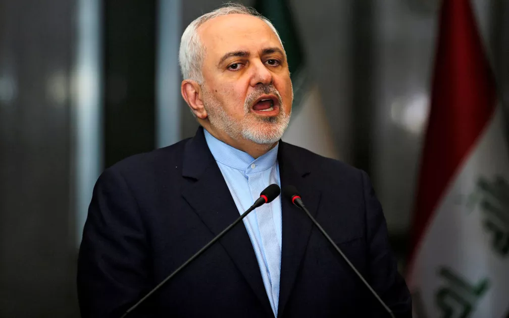

Site de Noticias por OlavoSantos39
Guerra Irã X Israel: níveis de radiação na região do Golfo permanecem normais, diz agência nuclear da ONU
27/06/2025
Em rede social, o ministro das Relações Exteriores iraniano criticou a insistência do chefe da agência em inspecionar as instalações nucleares do país e a chamou de "sem sentido, até mesmo maliciosa".
A Agência Internacional de Energia Atômica das Nações Unidas (AIEA) afirmou nesta sexta-feira (27) que os níveis de radiação na região do Golfo permanecem normais. Há dois dias, o porta-voz do Ministério das Relações Exteriores do Irã, afirmou que as instalações nucleares do país foram "gravemente danificadas" pelos ataques dos EUA. Ele não deu detalhes sobre a quais instalações nucleares se referiu ou se houve vazamento de material radioativo. O Irã suspendeu a cooperação com o órgão de fiscalização nuclear da ONU por acusar a agência de ser politicamente enviesada a favor de Israel.
A guerra de narrativas sobre a destruição da instalações
Na quarta-feira (25), o porta-voz do Ministério das Relações Exteriores do Irã, Esmail Baghaei, admitiu pela primeira vez que as instalações nucleares do país foram "gravemente danificadas" pelos ataques que os Estados Unidos fizeram no fim de semana. Até o momento, autoridades iranianas e a mídia estatal do país vinham minimizando a extensão dos danos dos ataques dos EUA e de Israel ao programa nuclear do país. No entanto, Baghaei disse que não daria mais detalhes sobre a quais instalações nucleares se referiu ou se houve vazamento de material radioativo decorrente dos ataques.
EUA entram na guerra e atacam 3 instalações nucleares do Irã!
24/06/2025
Presidente americano disse que aeronaves americanas já estão fora do espaço aéreo iraniano. Irã confirma ataque à sua principal unidade nuclear.
Os Estados Unidos atacaram o Irã neste sábado (21). O presidente Donald Trump informou que o país bombardeou três instalações nucleares. O Irã confirmou os ataques. Em pronunciamento, Trump disse que os bombardeios foram de grande precisão e que "ou haverá paz ou tragédia para o Irã". A entrada dos EUA na guerra acontece após uma semana de combates aéreos entre Israel e Irã. Nos últimos dias, Israel já tinha anunciado uma operação para destruir alvos nucleares iranianos. O Irã retaliou com mísseis contra cidades como Tel Aviv, Haifa e Jerusalém.
Noticias Regionais Politíca Esportes